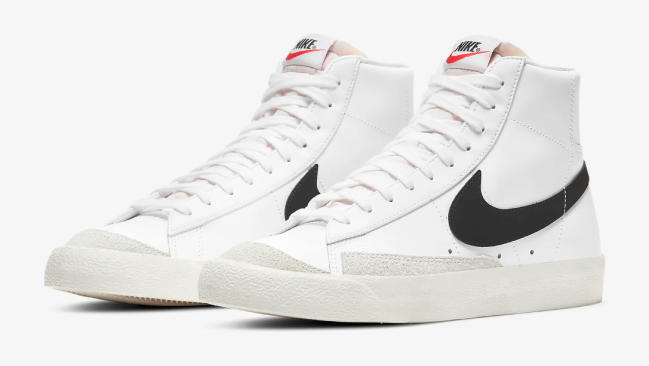
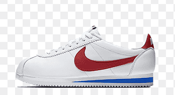
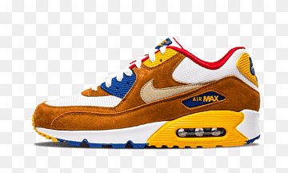

Historia y Origen
Fue fundada el 25 de enero de 1964 como Blue Ribbons Sports (BRS),910 por el deportista de la Universidad de Oregón Phil Knight y su entrenador, William Jay «Bill» Bowerman. La empresa comenzó distribuyendo calzado de la firma Onitsuka Tiger (actualmente ASICS) hasta 1971, cuando BRS lanzó su primer producto propio, con el emblema de la marca diseñado por Carolyn Davidson.
Según Otis Davis, un deportista, a quien Bowerman entrenó en la Universidad de Oregón, que más tarde pasó a ganar dos medallas de oro en los Juegos Olímpicos de Roma 1960. Bowerman hizo el primer par de zapatos Nike para él, lo que contradice la afirmación de que se hicieron por Phil Knight.
En 1964, en su primer año en el negocio, BRS vendió 1300 pares de zapatos para correr ganando en total 8000 USD. Antes de 1965 la nueva compañía había adquirido un empleado a tiempo completo, y las ventas habían alcanzado los 20 000 USD. En 1966, El RS abrió su primera tienda ubicada en el 3456 Bulevar en Santa Mónica, California, junto a un salón de belleza. En 1967, debido al rápido aumento de las ventas, el BRS expandió sus operaciones al por menor y distribución en la costa este, en Wellesley, Massachusetts.
Los mas vendidos
Nike Blazer
Las zapatillas Nike Blazer se convirtieron instantáneamente en todo un icono desde su lanzamiento en 1972. La parte superior de lona de las Nike Blazer se ha reinterpretado con múltiples colores y un sinfín de materiales para que hoy sigan siendo un clásico imprescindible en cualquier armario. Aunque nacieron como un homenaje al equipo de basket Portland Trail Blazers y fueron las zapatillas de baloncesto por excelencia por aquel entonces, poco a poco se convirtieron en el calzado preferido de los skaters y los coleccionistas de zapatillas gracias a su emblemático diseño, en constante actualización, pero sin olvidar nunca sus orígenes
Nike Cortez
La Nike Cortez, lanzadas oficialmente en 1972, es la primera zapatilla que ofreció tecnología visible orientada a mejorar el rendimiento de los corredores. La principal innovación incluida en esta zapatilla era un sistema de amortiguación en la entresuela para proporcionar una avanzada absorción de impactos en el talón. La primera versión femenina de la zapatilla, Señorita Cortez, llegó al mercado en 1974. La estética y el rendimiento mantuvieron el sello de la original, y a lo largo de los años 70 se convirtió en la zapatilla más vendida de Nike.
Nike Air Max
Creadas por el diseñador Tinker Hatfield e inspiradas en la arquitectura de concepto abierto de París, este modelo de zapatillas fue el primero que incorporó la tecnología Air de manera visible a través de una pequeña ventana en la mediasuela, Si bien este sistema de cámara de aire ya se utilizaba en otros modelos como el Tailwind, fue Hatfield quien se atrevió a mostrarla al mundo en la parte trasera de la zapatilla.
La tecnología Air es la mayor revolución de Nike hasta la fecha. A medida que aumentaba el aire en la suela, se reducía el uso de la espuma, mejorando el sistema de amortiguación y aumentando la sensación de ligereza y comodidad creando la sensación de caminar sobre el aire, uno de los principales objetivos de la compañía que se materializó en este modelo